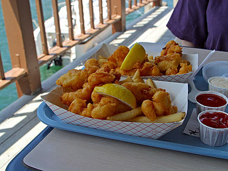

Fried Fish

Description
Deliciously crispy fried fish
Ingredients
- 1 egg
- 1½ cups beer
- 1 cup all-purpose flour
- 1 teaspoon garlic powder
- ½ teaspoon salt
- ½ teaspoon ground black pepper
- 1 pound cod fillets
- 2 cups crushed cornflake crumbs
- 1 quart oil for frying
Directions
- In a medium bowl, beat together egg, beer, flour, garlic powder, salt, and pepper. Place cod in the bowl, and thoroughly coat with the mixture.
- In a separate medium bowl, mix the cornflake crumbs and Cajun seasoning. Dip the cod in the crumb mixture, and thoroughly coat all sides.
- In a large, heavy skillet or deep fryer, heat the oil to 365 degrees F (185 degrees C). Fry the fish until golden brown, and flesh is easily flaked with a fork.